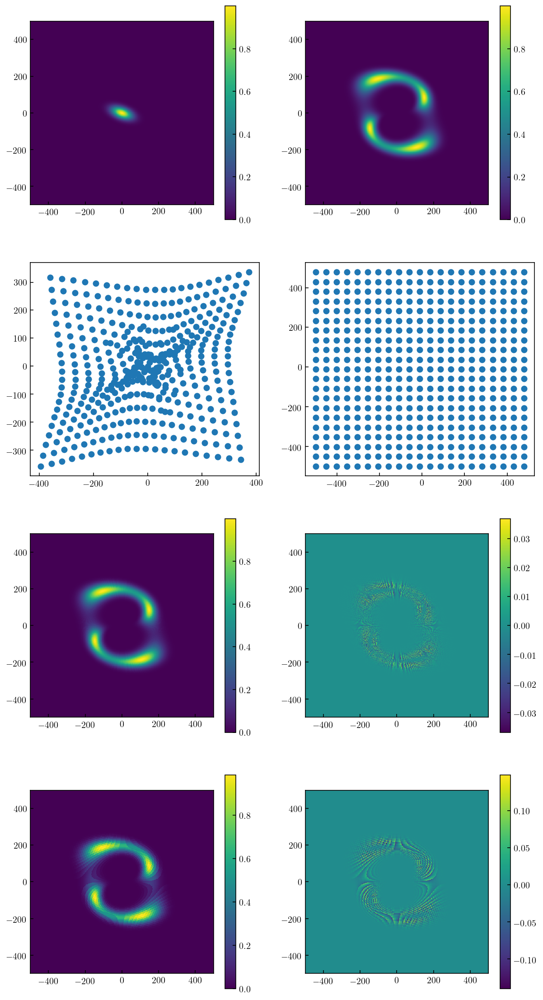
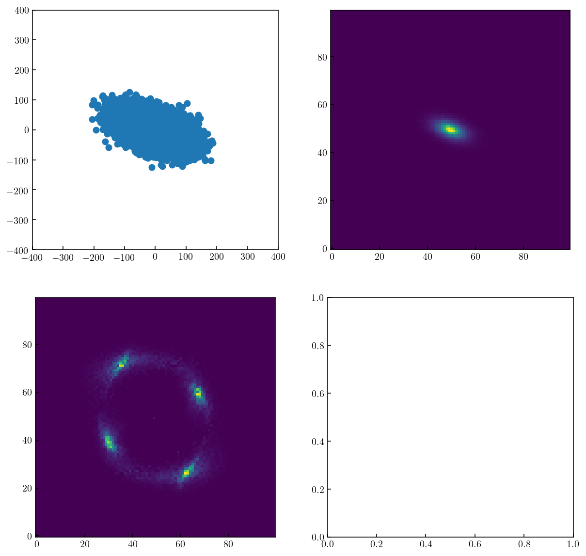

[23]:
nb_dir=_dh[0]
os.chdir(nb_dir+'/../output/lens')
sys.path.append(nb_dir)
from notebook_setup import *
%matplotlib inline
#%config InlineBackend.figure_format = "png" # ‘png’, ‘retina’, ‘jpeg’, ‘svg’, ‘pdf’.
%reload_ext wurlitzer
%reload_ext memory_profiler
%reload_ext line_profiler
ism3d.logger_config(logfile='ism3d.log',loglevel='DEBUG',logfilelevel='DEBUG',log2term=False)
print(''+ism3d.__version__)
print('working dir: {}\n'.format(os.getcwd()))
0.3.dev1
working dir: /Users/Rui/Resilio/Workspace/projects/ism3d/models/output/lens
[26]:
inpfile='../../input/mockup_lens.ini'
inp_dict=read_inp(inpfile)
mod_dict=inp_to_mod(inp_dict)
mod_dict['obj5']
# make source
x=np.linspace(-500,500,512)
y=np.linspace(-500,500,512)
xx,yy=np.meshgrid(x,y)
source=eval_apmodel2d(mod_dict['obj5'],xx,yy)
# make lensed souce
l_amp = 200 # Einstein radius
l_xcen = 0.0 # x position of center
l_ycen = 0.0 # y position of center
l_axrat = 0.5 # minor-to-major axis ratio
l_pa = 30. # major-axis position angle (degrees) c.c.w. from x axis
lpar = np.asarray([l_amp, l_xcen, l_ycen, l_axrat, l_pa])
(xg, yg) = sie_grad(xx, yy, lpar)
xs=xx-xg; ys=yy-yg
source_lensed=eval_apmodel2d(mod_dict['obj5'],xs,ys)
print(np.min(np.abs(xg)),np.max(np.abs(xg)))
print(np.min(np.abs(yg)),np.max(np.abs(yg)))
cell=abs(x[0]-x[1])
ix=(xs-(-500))/cell
iy=(ys-(-500))/cell
source_lensed_cc=source[np.round(iy).astype(np.int),np.round(ix).astype(np.int)]
x_ccc=np.linspace(-500,500,128)
y_ccc=np.linspace(-500,500,128)
xx_ccc,yy_ccc=np.meshgrid(x_ccc,y_ccc)
source_ccc=eval_apmodel2d(mod_dict['obj5'],xx_ccc,yy_ccc)
cell_ccc=abs(x_ccc[0]-x_ccc[1])
ix_ccc=(xs-(-500))/cell_ccc
iy_ccc=(ys-(-500))/cell_ccc
source_lensed_ccc=source_ccc[np.round(iy_ccc).astype(np.int),np.round(ix_ccc).astype(np.int)]
### PLOT
figname='lens_apmodel2d.pdf'
fig, axs = plt.subplots(4,2, figsize=(10,20))
axs=np.array(axs).reshape(-1)
im0=axs[0].imshow(source,extent=[-500,500,-500,500])
cb0=fig.colorbar(im0, ax=axs[0])
im1=axs[1].imshow(source_lensed,extent=[-500,500,-500,500])
cb1=fig.colorbar(im1, ax=axs[1])
# plot source/lense plane sub-sampling points
axs[2].scatter(xs[::25,::25],ys[::25,::25])
axs[3].scatter(xx[::25,::25],yy[::25,::25])
# use a fine-sampling image
im4=axs[4].imshow(source_lensed_cc,extent=[-500,500,-500,500])
im5=axs[5].imshow(source_lensed_cc-source_lensed,extent=[-500,500,-500,500])
cb4=fig.colorbar(im4, ax=axs[4])
cb5=fig.colorbar(im5, ax=axs[5])
# use a coarse-sampling image rather than analytical function
im6=axs[6].imshow(source_lensed_ccc,extent=[-500,500,-500,500])
im7=axs[7].imshow(source_lensed_ccc-source_lensed,extent=[-500,500,-500,500])
cb6=fig.colorbar(im6, ax=axs[6])
cb7=fig.colorbar(im7, ax=axs[7])
prepdir(figname)
fig.savefig(figname)
0.004395646376778473 183.8979913737746
0.003802698704205909 205.53009639870947

[81]:
def triangle_area(x1, y1, x2, y2, x3, y3):
return abs(0.5*(x1*(y2-y3)+x2*(y3-y1)+x3*(y1-y2)))
def PointInsideTriangle_method1(x1, y1, x2, y2, x3, y3,x_arr,y_arr,count=False):
A=triangle_area(x1, y1, x2, y2, x3, y3)
A1 = triangle_area(x_arr, y_arr, x2, y2, x3, y3)
A2 = triangle_area(x1, y1, x_arr, y_arr, x3, y3)
A3 = triangle_area(x1, y1, x2, y2, x_arr, y_arr)
if count==True:
return np.count_nonzero(np.equal(A,A1+A2+A3)),A
else:
return np.equal(A,A1+A2+A3)
x_arr=np.random.rand(10**6)
y_arr=np.random.rand(10**6)
%lprun -f PointInsideTriangle_method1 PointInsideTriangle_method1(0,0,0,1,1,1,x_arr,y_arr,count=True)
pprint(PointInsideTriangle_method1(0,0,0,1,1,1,x_arr,y_arr,count=True))
(499601, 0.5)
Timer unit: 1e-06 s
Total time: 0.048016 s
File: <ipython-input-81-6b10a9dec705>
Function: PointInsideTriangle_method1 at line 4
Line # Hits Time Per Hit % Time Line Contents
==============================================================
4 def PointInsideTriangle_method1(x1, y1, x2, y2, x3, y3,x_arr,y_arr,count=False):
5 1 5.0 5.0 0.0 A=triangle_area(x1, y1, x2, y2, x3, y3)
6 1 17852.0 17852.0 37.2 A1 = triangle_area(x_arr, y_arr, x2, y2, x3, y3)
7 1 15606.0 15606.0 32.5 A2 = triangle_area(x1, y1, x_arr, y_arr, x3, y3)
8 1 10408.0 10408.0 21.7 A3 = triangle_area(x1, y1, x2, y2, x_arr, y_arr)
9 1 2.0 2.0 0.0 if count==True:
10 1 4143.0 4143.0 8.6 return np.count_nonzero(np.equal(A,A1+A2+A3)),A
11 else:
12 return np.equal(A,A1+A2+A3)
[78]:
from matplotlib.path import Path
def triangle_area(x1, y1, x2, y2, x3, y3):
return abs(0.5*(x1*(y2-y3)+x2*(y3-y1)+x3*(y1-y2)))
def PointInsideTriangle_method2(x1, y1, x2, y2, x3, y3,x_arr,y_arr,count=False):
A=triangle_area(x1, y1, x2, y2, x3, y3)
p=Path([(x1,y1),(x2,y2),(x3,y3)])
points = np.vstack((x_arr,y_arr)).T
cc=p.contains_points(points)
if count==True:
return cc.sum(),A
else:
return cc
x_arr=np.random.rand(10**6)
y_arr=np.random.rand(10**6)
%lprun -f PointInsideTriangle_method2 PointInsideTriangle_method2(0,0,0,1,1,1,x_arr,y_arr,count=True)
pprint(PointInsideTriangle_method2(0,0,0,1,1,1,x_arr,y_arr,count=True))
(500743, 0.5)
Timer unit: 1e-06 s
Total time: 0.031487 s
File: <ipython-input-78-76b286e3cfe3>
Function: PointInsideTriangle_method2 at line 6
Line # Hits Time Per Hit % Time Line Contents
==============================================================
6 def PointInsideTriangle_method2(x1, y1, x2, y2, x3, y3,x_arr,y_arr,count=False):
7 1 5.0 5.0 0.0 A=triangle_area(x1, y1, x2, y2, x3, y3)
8 1 38.0 38.0 0.1 p=Path([(x1,y1),(x2,y2),(x3,y3)])
9 1 2241.0 2241.0 7.1 points = np.vstack((x_arr,y_arr)).T
10 1 26944.0 26944.0 85.6 cc=p.contains_points(points)
11 1 3.0 3.0 0.0 if count==True:
12 1 2256.0 2256.0 7.2 return cc.sum(),A
13 else:
14 return cc
[84]:
from ism3d.arts.sparse import clouds_morph,clouds_discretize_2d
inpfile='../../input/mockup_lens.ini'
inp_dict=read_inp(inpfile)
mod_dict=inp_to_mod(inp_dict)
clouds_from_disk3d(mod_dict['contdisk3'],nc=100000,nv=20,seeds=[None]*4)
clouds_loc=mod_dict['contdisk3']['clouds_loc']
pprint(mod_dict['contdisk3'])
# sbProf=('sersic2d',0.1,1)
# clouds_loc,cloudmeta=clouds_morph(sbProf,seeds=[None,None,None],size=10**6)
im=clouds_discretize_2d(clouds_loc,range=[[-400,+400],[-400,+400]],bins=(100,100))
fig, axs = plt.subplots(2,2, figsize=(10,10))
axs=np.array(axs).reshape(-1)
axs[0].scatter(clouds_loc.x,clouds_loc.y)
axs[0].set_xlim(-400,400)
axs[0].set_ylim(-400,400)
axs[1].imshow(im)
xp=clouds_loc.x.value
yp=clouds_loc.y.value
points = np.vstack((xp,yp)).T
sx=np.linspace(-400,400,100)
sy=np.linspace(-400,400,100)
xx,yy=np.meshgrid(sx,sy)
l_amp = 200 # Einstein radius
l_xcen = 0.0 # x position of center
l_ycen = 0.0 # y position of center
l_axrat = 0.5 # minor-to-major axis ratio
l_pa = 30. # major-axis position angle (degrees) c.c.w. from x axis
lpar = np.asarray([l_amp, l_xcen, l_ycen, l_axrat, l_pa])
(xg, yg) = sie_grad(xx, yy, lpar)
# xx-xg,yy-yg source plane coordins
# xx,yy lens plane
xs=xx-xg
ys=yy-yg
cc=xx*0
def ray_tracing(xs,ys):
cc=xs*0.0
nxy=xs.shape
for i in range(nxy[0]-1):
for j in range(nxy[1]-1):
cc1,ss1=PointInsideTriangle_method1(xs[i,j],ys[i,j],xs[i+1,j],ys[i+1,j],xs[i+1,j+1],ys[i+1,j+1],
xp,yp,count=True)
cc2,ss2=PointInsideTriangle_method1(xs[i,j],ys[i,j],xs[i+1,j+1],ys[i+1,j+1],xs[i,j+1],ys[i,j+1],
xp,yp,count=True)
cc[i,j]=float(cc1)/ss1+float(cc2)/ss2
return cc
%lprun -f PointInsideTriangle cc=ray_tracing(xs,ys)
axs[2].imshow(cc)
{'clouds_loc': <CartesianRepresentation (x, y, z) in kpc
[(-11.12177323, -13.83754142, -36.20298477),
( 19.15298309, 6.95474474, 20.61408669),
( 1.35390224, -4.27555465, -7.32368815), ...,
(-20.08659297, -0.0994958 , -10.74597677),
( -9.77598476, 6.06115733, 3.40103504),
( 46.90491307, -29.32584697, -24.76410754)]>,
'clouds_source': <CartesianRepresentation (x, y, z) in kpc
[(-39.75615752, 5.71833034, -3.5462848 ),
( 24.39533692, -15.61925408, -1.02578963),
( -8.11982265, -2.73457776, -0.58343092), ...,
(-12.78804631, 18.84119362, 0.6575924 ),
( 4.1214033 , 11.25945864, -0.33640983),
(-27.20377468, -54.10623107, -2.40989517)]>,
'clouds_wt': None,
'contflux': (<Quantity 1.e-05 Jy>, <Quantity 20. GHz>, 8.0),
'inc': <Quantity 60. deg>,
'pa': <Quantity 70. deg>,
'rcProf': ('tanh', <Quantity 300. km / s>, <Quantity 2. kpc>),
'sbProf': ('sersic2d', <Quantity 40. kpc>, 0.8),
'type': 'disk3d',
'vbProf': ('sech', <Quantity 1. kpc>),
'xypos': <SkyCoord (ICRS): (ra, dec) in deg
(189.2933333, 62.37527777)>,
'z': 4.06}
[84]:
<matplotlib.image.AxesImage at 0x16400ae50>

Timer unit: 1e-06 s
Total time: 25.4884 s
File: <ipython-input-81-6b10a9dec705>
Function: PointInsideTriangle_method1 at line 4
Line # Hits Time Per Hit % Time Line Contents
==============================================================
4 def PointInsideTriangle_method1(x1, y1, x2, y2, x3, y3,x_arr,y_arr,count=False):
5 19602 56083.0 2.9 0.2 A=triangle_area(x1, y1, x2, y2, x3, y3)
6 19602 7535793.0 384.4 29.6 A1 = triangle_area(x_arr, y_arr, x2, y2, x3, y3)
7 19602 7563608.0 385.9 29.7 A2 = triangle_area(x1, y1, x_arr, y_arr, x3, y3)
8 19602 7659633.0 390.8 30.1 A3 = triangle_area(x1, y1, x2, y2, x_arr, y_arr)
9 19602 14592.0 0.7 0.1 if count==True:
10 19602 2658717.0 135.6 10.4 return np.count_nonzero(np.equal(A,A1+A2+A3)),A
11 else:
12 return np.equal(A,A1+A2+A3)